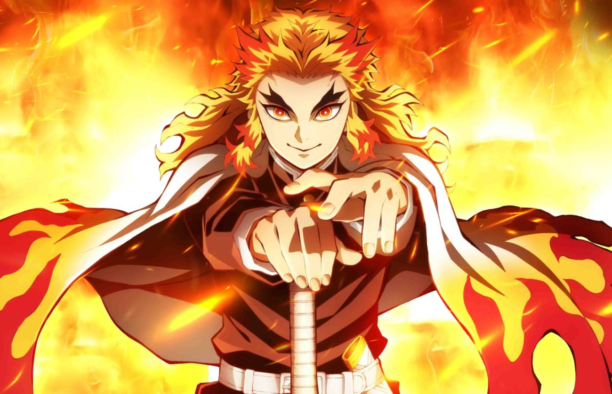

<!DOCTYPE html>
<html lang="pt-br"></html>

<head>
    <meta charset="UTF-8">
    <meta name="viewport" content="width=device-width, initial-scale=1.0">
    <title>Demon Slayers</title>
    <link rel="stylesheet" href="./assets/css/style.css"
</head>

<body>
    <h1 style="text-align: center;">Demon Slayers</h1>
    <h2>Sinopse</h2>
        <p>Determinando-se a vingar sua família e encontrar uma cura para Nezuko, Tanjiro se junta aos "Caçadores de Demônios", uma organização secreta dedicada a erradicar essas criaturas malignas. Ao longo de sua jornada, Tanjiro enfrenta diversos desafios, aprimora suas habilidades de combate e faz amizades importantes. A série é conhecida por sua animação deslumbrante, batalhas emocionantes e uma narrativa que explora temas de coragem, redenção e sacrifício.</p>

        <iframe width="560" height="315" src="https://www.youtube.com/embed/KN921po7cEE?si=anjZF7THt--nfH4O" title="YouTube video player" frameborder="0" allow="accelerometer; autoplay; clipboard-write; encrypted-media; gyroscope; picture-in-picture; web-share" referrerpolicy="strict-origin-when-cross-origin" allowfullscreen></iframe>
<hr>
    <h2>Lista de personagens</h2>
        <ul style="text-align: center;">
            <li>Tanjiro Kamado</li>
            <li>Nezuko Kamado</li>
            <li>Giyu Tomioka</li>
            <li>Zenitsu Agatsuma</li>
            <li>Inosuke Hashibira</li>
            <li>Muzan Kibtsuji</li>
            <li>Inosuke Hashibira</li>
            <li>Sakonji Urokodaki</li>
            <li>Obanai Iguro</li>
            <li>Akaza</li>
        </ul>
<hr>
    <h2>Os 10 episódios da 1º temporada</h2>
        <ol>
            <li style="background-color: lightcyan;">Crueldade</li>
            <li>O Mestre Sakonji Urokodaki</li>
            <li>Sabito e Makomo</li>
            <li style="background-color: lightcyan">Seleção Final</li>
            <li>Meu Próprio Aço</li>
            <li>Espadachins do Corpo de Caçadores de Demônios</li>
            <li>Muzan Kibutsuji</li>
            <li>O Cheiro do Sangue Encantador</li>
            <li>Demônio da Temari e Demônio da Flecha</li>
            <li>Juntos Para Sempre</li>
        </ol>
<hr>
        <h2 style="color: cyan; background-color: lightcyan;">Imagens</h2>
            
            
            
            
            
            
            
            
            
            
</body>
